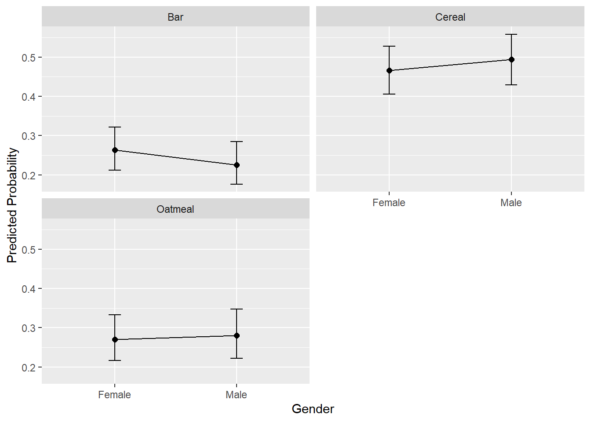

Chapter 8 Standard MNL
Sources for this chapter:
- R for Marketing Research ad Analytics, Second Edition (2019). Chris Chapman and Elea McDonnell Feit
Data for this chapter:
The bfast.rdata is used. Load it now.
# You may need to change the directory load("Data/bfast.rdata")
8.1 Introduction
Base R is not good for standard multinomial logistic regression (MNL). The best package that I have found for standard MNL is nnet with its multinom function. Install that package install.packages("nnet") and load it.
library(nnet)In addition, I have created some user defined functions. You should download these functions and save them in your working directory.
- stmnl.R produces Odds Ratio coefficients table, overall model significance, and McFadden’s Pseudo-\(R^2\)
- stmnl_cm.R produces a Classification Matrix
- stmnl_pp.R produces average predicted probability tables and plots
8.2 Data Preparation
As with binary logistic regression, we often us a training and holdout sample when using MNL. For standard MNL, the process is the same.
library(caret)
set.seed(4320)
inTrain <- createDataPartition(y=bfast$bfast, p=.75, list=FALSE)
train <- bfast[inTrain,]
test <- bfast[-inTrain,]8.3 Standard MNL using multinom()
- Standard MNL is performed using the
multinom()function from thennetpackage - Usage:
multinom(formula, data)formulais represented by dependent variables on the left side separated from the independent variables on the right side by a tilde(~), such as:dv ~ iv1 + iv2datais the name of the (usually) training data
- As with other analyses, we save the result of the model to an object
summary()provides standard coefficient estimates (i.e., not Odds Ratio estiamtes), but does not provide overall model fit values (i.e., overall model \(p\)-value or McFadden’s Psuedo \(R^2\)) or p-values for each independent variable
library(nnet)
model <- multinom(bfast ~ gender + marital + lifestyle + age, data=train)# weights: 18 (10 variable)
initial value 727.281335
iter 10 value 579.014122
final value 574.997631
convergedsummary(model)Call:
multinom(formula = bfast ~ gender + marital + lifestyle + age,
data = train)
Coefficients:
(Intercept) genderMale maritalUnmarried lifestyleInactive age
Bar 0.8832457 -0.21298963 0.6126977 -0.7865772 -0.02532866
Oatmeal -4.4920408 -0.02262325 -0.3897362 0.3187473 0.07996475
Std. Errors:
(Intercept) genderMale maritalUnmarried lifestyleInactive age
Bar 0.3256994 0.2064320 0.2123832 0.2090460 0.006655803
Oatmeal 0.4596750 0.2094666 0.2366511 0.2156992 0.007755708
Residual Deviance: 1149.995
AIC: 1169.995 8.3.1 stmnl() User Defined Function
- To get overall model fit values, as well as an Odds Ratio estimate table with p-values, the
stmnl()user defined function can be used - Usage:
stmnl(model)modelis the name of the object with the saved model results
- NOTE: This function requires the
broompackage. If you do not have it installed on your machine, you will need to install it.
source("stmnl.R")
stmnl(model)Loading required package: broomRegistered S3 methods overwritten by 'broom':
method from
tidy.glht jtools
tidy.summary.glht jtoolsLR chi2 (8) = 288.1568; p < 0.0001
McFadden's Pseudo R-square = 0.2004
y.level term estimate std.error statistic p.value
Bar (Intercept) 2.4187 0.3257 2.7118 0.0067
Bar genderMale 0.8082 0.2064 -1.0318 0.3022
Bar maritalUnmarried 1.8454 0.2124 2.8849 0.0039
Bar lifestyleInactive 0.4554 0.2090 -3.7627 0.0002
Bar age 0.9750 0.0067 -3.8055 0.0001
Oatmeal (Intercept) 0.0112 0.4597 -9.7722 0.0000
Oatmeal genderMale 0.9776 0.2095 -0.1080 0.9140
Oatmeal maritalUnmarried 0.6772 0.2367 -1.6469 0.0996
Oatmeal lifestyleInactive 1.3754 0.2157 1.4777 0.1395
Oatmeal age 1.0832 0.0078 10.3104 0.00008.3.2 Classification Matrix
- To get a classification matrix, the
stmnl_cmuser-defined function should be used - Usage:
stmnl_cm(model, data)modelis the name of the object with the saved model resultsdatais name of the data to create the classification model for (i.e., training or holdout data)
source("stmnl_cm.R")
stmnl_cm(model, train)0.5619 = Hit Ratio
0.3413 = PCC Level T.Cereal T.Bar T.Oatmeal Total
1 P.Cereal 124 85 46 255
2 P.Bar 52 68 7 127
3 P.Oatmeal 79 21 180 280
4 Total 255 174 233 662stmnl_cm(model, test)0.5826 = Hit Ratio
0.3416 = PCC Level T.Cereal T.Bar T.Oatmeal Total
1 P.Cereal 45 24 20 89
2 P.Bar 18 25 0 43
3 P.Oatmeal 21 8 57 86
4 Total 84 57 77 2188.3.3 Average Predicted Probabilities
- Predicted probabilities can help interpret the effects of the independent variables on the choice dependent variable
- Use the
stmnl_ppuser-defined function for each IV to obtain these. - Usage:
stmnl_pp(model, focal, xlab)modelis the name of the object with the saved model resultsfocalis the name of the variable (in quotes) for which predicted probabilities are wantedxlabis optional, but can be provided for a better x-axis label for the plot (e.g., “Income Category”)
- NOTE 1: For continuous focal variables, the table produced uses three levels to calculate predicted probabilities: \(-1 SD\), \(MEAN\), \(+1 SD\)
- NOTE 2: This function requires the following packages:
tidyreffectsdplyrggplot2
source("stmnl_pp.R")
stmnl_pp(model, "age", "Age in Years")$table
age bfast p.prob lower.CI upper.CI
1 31 Cereal 0.5158 0.5727 0.4586
2 31 Bar 0.4134 0.4718 0.3573
3 31 Oatmeal 0.0708 0.1047 0.0473
4 49 Cereal 0.4792 0.5274 0.4314
5 49 Bar 0.2434 0.2874 0.2043
6 49 Oatmeal 0.2773 0.3255 0.2338
7 67 Cereal 0.2657 0.3196 0.2180
8 67 Bar 0.0856 0.1199 0.0604
9 67 Oatmeal 0.6487 0.7035 0.5897
$plot
stmnl_pp(model, "gender", "Gender")$table
gender bfast p.prob lower.CI upper.CI
1 Female Cereal 0.4660 0.5276 0.4053
2 Female Bar 0.2634 0.3219 0.2122
3 Female Oatmeal 0.2706 0.3324 0.2166
4 Male Cereal 0.4939 0.5584 0.4296
5 Male Bar 0.2257 0.2848 0.1758
6 Male Oatmeal 0.2804 0.3473 0.2221
$plot